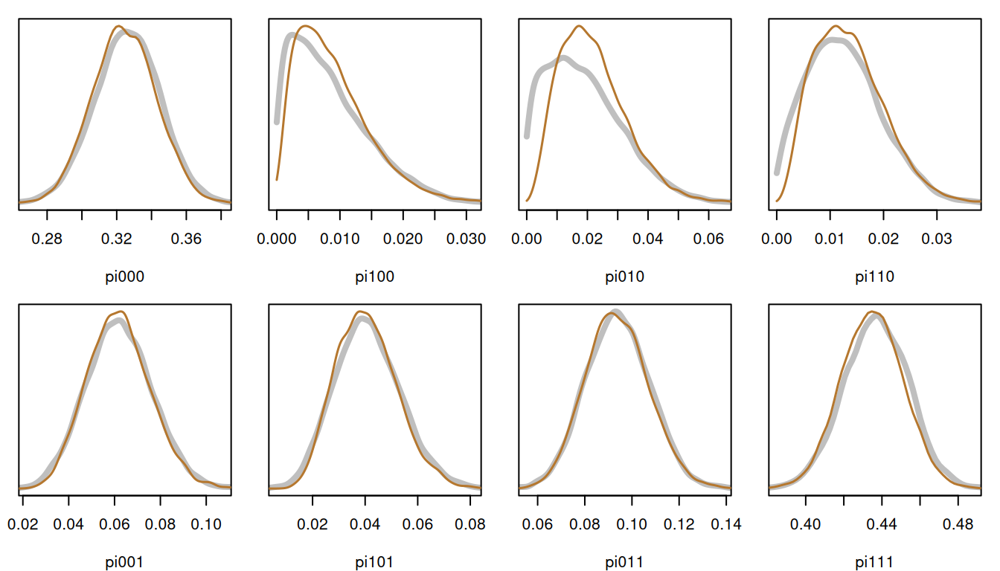

library(inlavanilla)
data(items_ecpe, qmatrix_ecpe, package = "edmdata")A diagnostic classification model (DCM) sorts examinees by which of a few skills, or attributes, they have mastered. Each examinee belongs to one of \(2^K\) latent classes, one for each pattern of mastery of \(K\) attributes. The latent variable is discrete, so it sums out of the likelihood exactly: the log-posterior of the item parameters and the class proportions has a closed form, and inla_vanilla() can take it as it is.
This article fits the DINA model to a language test, and compares the posterior marginals with those of Stan.
The data
The Examination for the Certificate of Proficiency in English (ECPE) data (Templin & Hoffman, 2013), from the edmdata package, hold the right or wrong answers of 2,922 examinees to 28 grammar items. A Q-matrix records which of three attributes each item requires: morphosyntactic, cohesive and lexical rules.
The model
The \(2^3 = 8\) classes are the rows of alpha, from no attribute mastered (000) to all three (111). In the DINA model (“deterministic input, noisy and gate”), examinee \(i\) in class \(c\) answers item \(j\) correctly with probability \(1 - s_j\) if the class has every attribute the item requires (\(\eta_{jc} = 1\)), and with probability \(g_j\) otherwise:
\[ P(y_{ij} = 1 \mid c) = (1 - s_j)^{\eta_{jc}} \, g_j^{1 - \eta_{jc}}, \qquad p(y_i) = \sum_{c=1}^{8} \pi_c \prod_{j=1}^{28} P(y_{ij} = 1 \mid c)^{y_{ij}} \{1 - P(y_{ij} = 1 \mid c)\}^{1 - y_{ij}}. \]
The guessing and slipping probabilities \(g_j\) and \(s_j\) get uniform priors, and the class proportions \(\pi\) a Dirichlet(1) prior.
The log-posterior
The probabilities go on the logit scale, and the class proportions on the log-ratio scale against class 000. Under a uniform prior the log-density of \(\text{logit}(g)\) is the log-Jacobian, \(\log g + \log(1 - g)\). Under a Dirichlet(1) prior the log-density of the log-ratios is \(\sum_c \log \pi_c\).
logpost <- function(theta, y, eta) {
g <- plogis(theta[1:28])
s <- plogis(theta[29:56])
log_pi <- c(0, theta[57:63])
log_pi <- log_pi - log(sum(exp(log_pi)))
# Probability of a correct answer, items by classes
p <- t(eta) * (1 - s) + t(!eta) * g
# Log-likelihood of each examinee in each class, then summed over classes
l <- y %*% log(p / (1 - p)) +
rep(colSums(log1p(-p)) + log_pi, each = nrow(y))
l_max <- l[cbind(seq_len(nrow(l)), max.col(l))]
loglik <- sum(l_max + log(rowSums(exp(l - l_max))))
loglik + sum(log(g) + log1p(-g) + log(s) + log1p(-s)) + sum(log_pi)
}The fit
There are 63 parameters: 28 guessing and 28 slipping parameters, and 7 class log-ratios.
init <- c(
setNames(rep(qlogis(0.2), 28), sprintf("g%02d", 1:28)),
setNames(rep(qlogis(0.1), 28), sprintf("s%02d", 1:28)),
setNames(rep(0, 7), paste0("pi", classes[-1]))
)
fit <- inla_vanilla(logpost, init, y = y, eta = eta)
#> ✔ Found the posterior mode in 186 iterations [36.2s]
#> ✔ VB mean correction, max shift 0.44σ [1m 4s]
#> ✔ Fitted 63 skew-normal marginals [27.6s]Draws give the parameters on the probability scale, and the share of examinees who have mastered each attribute, \(\sum_c \pi_c \alpha_{ck}\):
natural <- function(theta) {
log_pi <- c(0, theta[57:63])
pi <- exp(log_pi) / sum(exp(log_pi))
c(
plogis(theta[1:56]),
setNames(pi, paste0("pi", classes)),
colSums(pi * alpha)
)
}
set.seed(1)
draws <- sampling(fit, nsamp = 10000, fun = natural)
round(colMeans(draws[, 57:67]), 3)
#> pi000 pi100 pi010 pi110
#> 0.324 0.009 0.022 0.014
#> pi001 pi101 pi011 pi111
#> 0.062 0.041 0.094 0.435
#> morphosyntactic cohesive lexical
#> 0.498 0.564 0.631Over two in five examinees have mastered all three attributes, and nearly a third none of them. The classes with only the morphosyntactic or only the cohesive attribute are rare, at 1 to 2%.
The fit takes about 40 seconds, most of it in the 70,000 or so calls of logpost that 63 parameters need without a gradient.
Checking against Stan
Stan samples the same model, with the classes summed out in the same way and the same priors. Its 10,000 draws took about two minutes, after compiling the model, and were summarised ahead of time (lab/dcm-article.R in the package source), so this page does not need Stan to build.
For each block of parameters, the largest gap between the posterior means, in Stan’s posterior SDs, and the range of the ratio of the SDs:
gap <- (colMeans(draws[, 1:64]) - ref$summary$mean) / ref$summary$sd
sd_ratio <- apply(draws[, 1:64], 2, sd) / ref$summary$sd
block <- rep(c("guessing", "slipping", "class proportions"), c(28, 28, 8))
data.frame(
max_gap = tapply(abs(gap), block, max),
sd_ratio_min = tapply(sd_ratio, block, min),
sd_ratio_max = tapply(sd_ratio, block, max)
)[c("guessing", "slipping", "class proportions"), ] |>
round(2)
#> max_gap sd_ratio_min sd_ratio_max
#> guessing 0.03 0.98 1.03
#> slipping 0.04 0.97 1.02
#> class proportions 0.23 0.87 0.99The 56 item parameters agree to a few hundredths of a standard deviation. The class proportions agree less closely where the classes are rare. Their posteriors pile up against zero, which a skew-normal on the log-ratio scale does not reach. The worst is pi010, the cohesive-only class: its mean is 0.23 SD high and its SD 13% narrow, a gap of 0.003 on the probability scale. summary(fit) flags it, and the other two rare classes, with large ridge bends. The class proportions, Stan in grey:
op <- par(mfrow = c(2, 4), mar = c(4, 1, 1, 1))
for (cl in paste0("pi", classes)) {
d_ref <- ref$density[[cl]]
d_iv <- density(draws[, cl], n = 256, from = 0)
plot(
d_ref$x, d_ref$y, type = "l", lwd = 4, col = "grey75",
xlim = range(d_ref$x[d_ref$y > max(d_ref$y) / 100]),
ylim = c(0, max(d_ref$y, d_iv$y)), xlab = cl, ylab = "", yaxt = "n"
)
lines(d_iv, lwd = 1.5, col = "#B5772E")
}
par(op)Classifying examinees
Each examinee’s chance of having mastered each attribute is a function of the parameters, so draws of it average over their uncertainty. For the first three examinees:
mastery <- function(theta, y_i) {
g <- plogis(theta[1:28])
s <- plogis(theta[29:56])
log_pi <- c(0, theta[57:63])
p <- t(eta) * (1 - s) + t(!eta) * g
l <- drop(y_i %*% log(p / (1 - p))) + colSums(log1p(-p)) + log_pi
w <- exp(l - max(l)) / sum(exp(l - max(l)))
colSums(w * alpha)
}
set.seed(1)
t(sapply(1:3, function(i) {
colMeans(sampling(fit, nsamp = 1000, fun = mastery, y_i = y[i, ]))
})) |>
round(3)
#> morphosyntactic cohesive lexical
#> [1,] 1.000 0.938 1
#> [2,] 1.000 0.804 1
#> [3,] 0.999 0.985 1References
Templin, J., & Hoffman, L. (2013). Obtaining diagnostic classification model estimates using Mplus. Educational Measurement: Issues and Practice, 32(2), 37–50. https://doi.org/10.1111/emip.12010